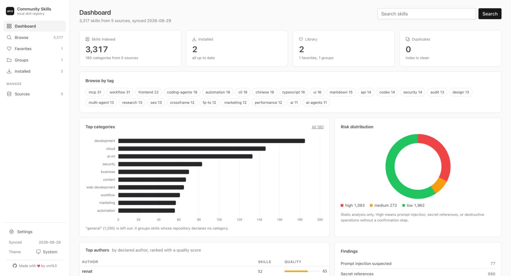
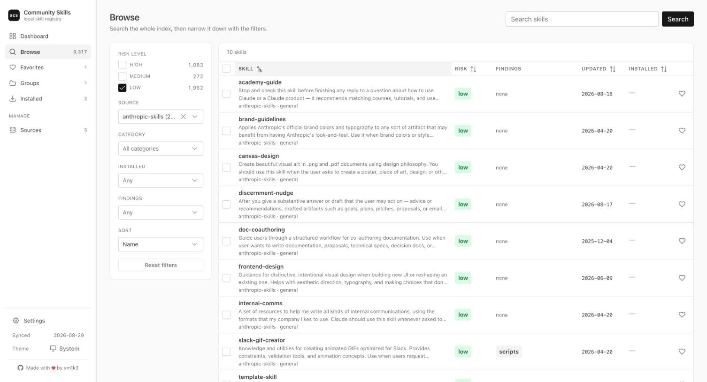
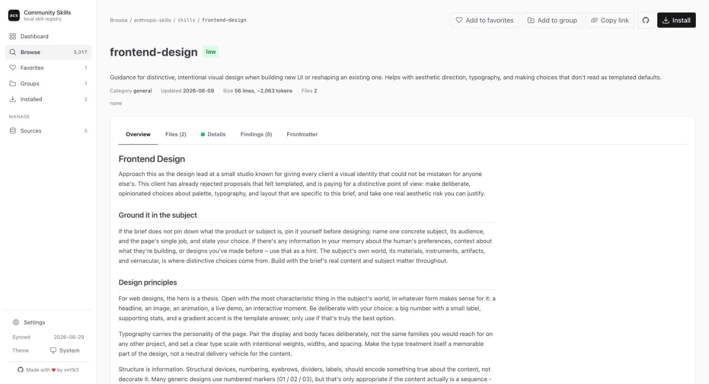
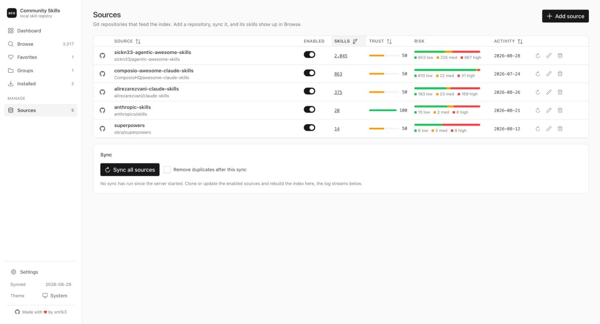

Skills for Claude Code, Codex, and Grok are scattered across dozens of GitHub repositories. ai-community-skills pulls them into one local catalog you can search, browse, and install from, with a risk check on every skill as a bonus.

One catalog for SKILL.md based Agent Skills from every source you care about, plus the tools to pick the right ones.
Point it at GitHub repositories of community skills. acs sync clones them, walks every SKILL.md, and builds one searchable index.
Scripts, network calls, destructive operations without confirmation, prompt injection patterns, secret references. Every finding points to a file and a line. Nothing is ever executed.
Claude Code personal or project scope, Codex, Grok Build, or a zip for claude.ai. A risk summary and a confirmation come first, and drift is reported after every sync.
Filter by risk, source, category, tag, author, or install state. Sort any column. Every view has a URL you can share.
Mark skills, build named groups, install a whole group in one go, and export it as JSON to import on another machine.
The same skill published by several aggregators is collapsed to one entry. Each source has a trust level, and the most trusted copy wins.
Run acs ui and open http://127.0.0.1:8080. Same catalog, same analysis, a faster way to review.
Thousands of skills from every source in one table, narrowed down in a click.

Each skill page shows what the agent would actually read and what the analysis found in it.

Sources are git repositories. Add one, sync it, and its skills show up in the catalog.

Node.js 20 or newer and git on PATH. Everything lives under ~/.acs/.
# write the default config acs init # clone the sources and build the catalog acs sync # find something acs search "frontend design" acs info frontend-design # install after reviewing the risk summary acs install frontend-design acs install frontend-design --target codex acs install frontend-design --target grok # or do it all from the browser acs ui